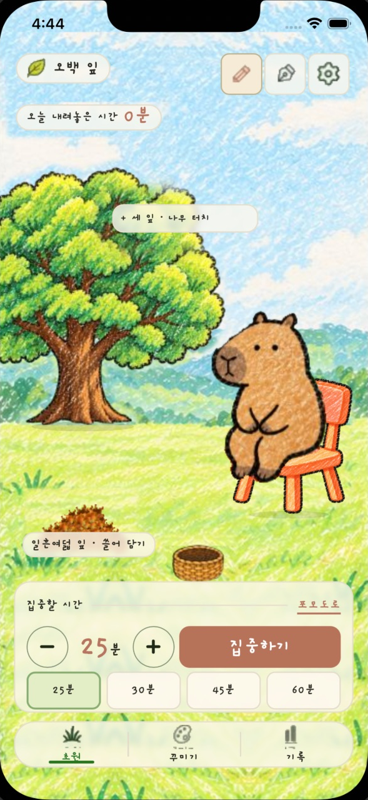
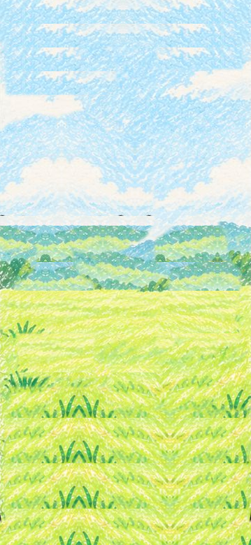
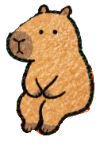

오늘은,
조금 쉬어 가요.
잠깐 폰을 내려놓고, 나만의 초원으로.
쉬는 시간에 쌓인 작은 잎으로
동물과 함께할 풍경을 꾸며 보세요.
iOS · Android 앱 출시 준비 중

내려놓고, 쉬고, 꾸미고.
해야 할 일을 하나 더 만들지 않도록.
작은 초원을 켜 두고 천천히 시작해요.
- 01
편하게 내려놓아요.
화면을 켜 둔 채 폰을 평평한 곳에 놓아요. 30초 동안 안정된 상태를 확인한 뒤 쉬는 시간을 기록해요.
- 02
작은 잎을 모아요.
10분마다 생긴 바닥 잎을 손으로 쓸어 바구니에 담아요. 나무에 쌓인 보너스도 눌러서 모아요.
- 03
나의 초원으로 만들어요.
동물과 의자, 초원과 소품을 골라 미리 보고 확정해요. 모은 잎으로 꾸미며 나만의 쉼을 찾아요.
시간이 흐르는 작은 초원.
낮의 연둣빛부터 따뜻한 노을과 푸른 밤까지.
그림 같은 풍경 속에서, 동물도 나란히 쉬어요.


곁에서, 함께 쉬어요.
동물은 작게 숨 쉬고 눈을 깜빡이며, 터치하면 살짝 반응해요. 움직임이 부담스러운 날에는 설정에서 줄일 수 있어요.
조금만 기다려 주세요.
쉬는사이는 App Store와 Google Play 출시를 준비하고 있어요. 스토어에서 공개되면 이곳에 다운로드 링크를 안내할게요.
무료 앱으로 준비 중이에요. 현재 앱에는 광고와 실제 화폐 결제 기능이 없어요.
궁금한 게 있나요?
화면을 꺼도 시간이 쌓이나요?
현재는 화면이 켜져 있고 쉬는사이가 앞에 보이는 동안에만 내려놓음을 확인해요. 화면을 잠그거나 다른 앱을 사용하는 동안에는 집중 시간과 잎 적립을 멈춰요.
꼭 타이머를 켜야 하나요?
일상 쉼과 목표를 정한 집중을 이용할 수 있어요. 집중 목표는 자유 방식이나 포모도로 방식으로 정하고, 필요하면 일시정지하거나 이어갈 수 있어요.
회원가입이나 결제가 필요한가요?
별도 회원가입은 없어요. 현재 앱에는 광고와 실제 화폐 결제 기능이 없으며, 꾸미기에 쓰는 잎은 쉬는 시간을 통해 모아요.
기기를 바꾸면 기록은 어떻게 옮기나요?
설정의 ‘데이터와 백업’에서 JSON 파일을 내보내고 새 기기에서 복원해요. 자동 서버 동기화는 없으니 앱 삭제 전에는 백업 파일을 별도로 보관해 주세요.